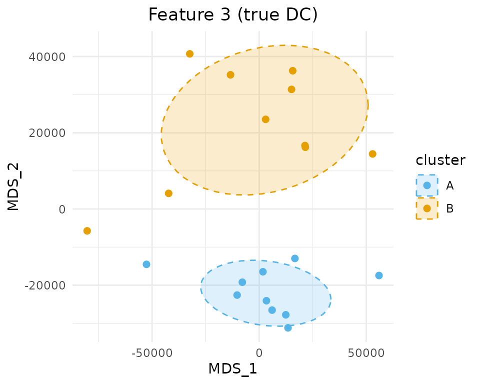
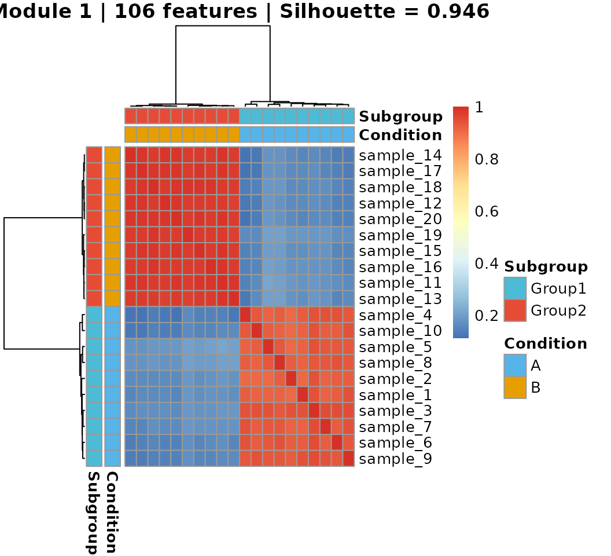

This vignette walks through the complete MOSAIC pipeline using simulated data only — no external datasets required. After installing MOSAIC, you can run every code block below to see the framework in action.
We will:
- Generate synthetic multi-modal data with known differential connectivity (DC) signal
- Run the MOSAIC embedding
- Perform differential connectivity analysis
- Detect patient subgroups from feature modules
Step 1: Generate Simulated Data
We simulate a two-modality dataset with 20 samples (10 per condition), where 20% of features undergo connectivity rewiring between conditions A and B.
library(MOSAIC)
library(ggplot2)
sim <- simulate_multimodal_data(
simulation_type = "DC",
n_features = c(500, 400),
signal_prop = 0.2,
seed = 42,
rescale = TRUE,
add_batch = FALSE,
nonlinear = FALSE,
sample_noise_level = 0.5,
feature_noise_level = 0.5,
cell_noise_level = 0.5
)
cat("Modalities:", length(sim$seurat_list), "\n")
#> Modalities: 2
cat("Samples:", nrow(sim$sample_metadata), "\n")
#> Samples: 20
cat("Features per modality:", sapply(sim$seurat_list, nrow), "\n")
#> Features per modality: 500 400The returned Seurat objects include ground-truth labels: feature_cluster (which module a feature belongs to) and is_de (whether the feature was rewired).
Step 2: Run MOSAIC Embedding
result <- run_MOSAIC(
sim$seurat_list,
assays = c("originalexp", "originalexp"),
sample_meta = "sample_id",
condition_meta = "condition"
)
#> MOSAIC: 2 modality/modalities, 20 samples detected
#> Processing sample 1 / 20
#> Processing sample 2 / 20
#> Processing sample 3 / 20
#> Processing sample 4 / 20
#> Processing sample 5 / 20
#> Processing sample 6 / 20
#> Processing sample 7 / 20
#> Processing sample 8 / 20
#> Processing sample 9 / 20
#> Processing sample 10 / 20
#> Processing sample 11 / 20
#> Processing sample 12 / 20
#> Processing sample 13 / 20
#> Processing sample 14 / 20
#> Processing sample 15 / 20
#> Processing sample 16 / 20
#> Processing sample 17 / 20
#> Processing sample 18 / 20
#> Processing sample 19 / 20
#> Processing sample 20 / 20
#> Per-sample rank (median): 12
#> Global rank: 13
#> Done.Visualize the Eigenvalue Spectrum
The eigenvalues from the aggregated spectral decomposition reveal the effective dimensionality. The red line marks the automatically selected elbow.
elbow <- find_elbow_kneedle(result$eigenvalues)
plot_eigen(result$eigenvalues) +
geom_vline(xintercept = elbow, color = "red", linetype = "dashed") +
ggtitle(paste0("Eigenvalue spectrum (elbow = ", elbow, ")"))
Step 3: Differential Connectivity Analysis
3a. Run DC test on real labels
n_sample <- length(result$mosaic_embed_list)
dc_result <- run_DC_test(
result$mosaic_embed_list,
n_sample = n_sample,
groups = result$annotation$Condition
)3b. Run DC test on shuffled labels (null distribution)
We shuffle cell-to-sample assignments to destroy condition-specific signals, re-run MOSAIC, and collect null F-statistics.
# Shuffle sample labels
set.seed(123)
shuffled_idx <- sample(ncol(sim$seurat_list[[1]]))
for (k in seq_along(sim$seurat_list)) {
sim$seurat_list[[k]]$shuffled_sample <- sim$seurat_list[[k]]$sample_id[shuffled_idx]
sim$seurat_list[[k]]$shuffled_condition <- sim$seurat_list[[k]]$condition[shuffled_idx]
}
shuffle_mosaic <- run_MOSAIC(
sim$seurat_list,
assays = c("originalexp", "originalexp"),
sample_meta = "shuffled_sample",
condition_meta = "shuffled_condition",
verbose = FALSE
)
shuffle_dc <- run_DC_test(
shuffle_mosaic$mosaic_embed_list,
n_sample = n_sample,
groups = shuffle_mosaic$annotation$Condition
)3c. Compute empirical p-values
F_obs <- unlist(dc_result$F_stats_list)
F_null <- unlist(shuffle_dc$F_stats_list)
pvalues <- sapply(F_obs, function(x) calculate_empirical_pvalue(x, F_null))
dc_idx <- which(pvalues < 0.05)
cat(length(dc_idx), "DC features detected out of", length(pvalues), "total\n")
#> 44 DC features detected out of 900 total3d. Compare with ground truth
# Ground truth: combine is_de from both modalities
ground_truth <- c(
sim$seurat_list[[1]][["originalexp"]][[]]$is_de,
sim$seurat_list[[2]][["originalexp"]][[]]$is_de
)
true_dc <- which(ground_truth)
detected_dc <- dc_idx
precision <- length(intersect(detected_dc, true_dc)) / length(detected_dc)
recall <- length(intersect(detected_dc, true_dc)) / length(true_dc)
cat(sprintf("Precision: %.3f\n", precision))
#> Precision: 1.000
cat(sprintf("Recall: %.3f\n", recall))
#> Recall: 0.2443e. Visualize a DC feature
# Pick a true DC feature
chosen_idx <- true_dc[1]
sim_mat <- dc_result$similarity_matrix_list[[chosen_idx]]
groups <- dc_result$group_list[[chosen_idx]]
plot_mds_cluster(
sim_mat,
title = paste("Feature", chosen_idx, "(true DC)"),
cluster = groups,
custom_colors = c("A" = "#56B4E9", "B" = "#E69F00"),
size = 2,
ellipse_level = 0.68
)
Step 4: Unsupervised Subgroup Detection
Even without using condition labels, MOSAIC can discover patient subgroups by identifying feature modules whose connectivity patterns partition samples into distinct groups.
4b. Identify feature modules
library(dynamicTreeCut)
dist_feat <- as.dist(1 - feature_corr)
hc_feat <- hclust(dist_feat, method = "ward.D2")
feature_clusters <- cutreeDynamic(
dendro = hc_feat,
distM = as.matrix(dist_feat),
minClusterSize = 15,
method = "hybrid",
deepSplit = 2
)
#> ..cutHeight not given, setting it to 8.71 ===> 99% of the (truncated) height range in dendro.
#> ..done.
names(feature_clusters) <- colnames(feature_corr)
module_ids <- sort(unique(feature_clusters[feature_clusters > 0]))
cat(length(module_ids), "modules identified\n")
#> 23 modules identified
cat("Module sizes:", sapply(module_ids, function(m) sum(feature_clusters == m)), "\n")
#> Module sizes: 106 98 68 42 41 40 39 37 37 37 36 35 33 32 31 30 27 27 26 23 20 18 174c. Screen modules for subgroups
total_features <- nrow(result$mosaic_embed_list[[1]])
screen_results <- data.frame(
module = integer(), n_features = integer(),
silhouette = numeric(), balanced = logical(),
stringsAsFactors = FALSE
)
for (m in module_ids) {
idx <- which(feature_clusters == m)
sim_mat <- compute_module_similarity(result$mosaic_embed_list, idx)
partition <- find_partition_hclust(as.dist(1 - sim_mat))
screen_results <- rbind(screen_results, data.frame(
module = m,
n_features = length(idx),
silhouette = ifelse(partition$balanced, partition$silhouette, NA),
balanced = partition$balanced
))
}
screen_results <- screen_results[order(-screen_results$silhouette), ]
print(screen_results)
#> module n_features silhouette balanced
#> 1 1 106 0.9462005 TRUE
#> 2 2 98 0.9144864 TRUE
#> 5 5 41 0.5063513 TRUE
#> 3 3 68 NA FALSE
#> 4 4 42 NA FALSE
#> 6 6 40 NA FALSE
#> 7 7 39 NA FALSE
#> 8 8 37 NA FALSE
#> 9 9 37 NA FALSE
#> 10 10 37 NA FALSE
#> 11 11 36 NA FALSE
#> 12 12 35 NA FALSE
#> 13 13 33 NA FALSE
#> 14 14 32 NA FALSE
#> 15 15 31 NA FALSE
#> 16 16 30 NA FALSE
#> 17 17 27 NA FALSE
#> 18 18 27 NA FALSE
#> 19 19 26 NA FALSE
#> 20 20 23 NA FALSE
#> 21 21 20 NA FALSE
#> 22 22 18 NA FALSE
#> 23 23 17 NA FALSE4d. Visualize the best module’s heatmap
library(pheatmap)
best_module <- screen_results$module[which.max(screen_results$silhouette)]
best_idx <- which(feature_clusters == best_module)
sim_mat <- compute_module_similarity(result$mosaic_embed_list, best_idx)
partition <- find_partition_hclust(as.dist(1 - sim_mat))
annotation <- result$annotation
annotation$Subgroup <- ifelse(partition$groups == 1, "Group1", "Group2")
annotation_colors <- list(
Condition = c("A" = "#56B4E9", "B" = "#E69F00"),
Subgroup = c("Group1" = "#4DBBD5", "Group2" = "#E64B35")
)
pheatmap(
sim_mat,
annotation_row = annotation,
annotation_col = annotation,
annotation_colors = annotation_colors,
cluster_rows = partition$hclust,
cluster_cols = partition$hclust,
show_rownames = TRUE,
show_colnames = FALSE,
main = sprintf("Module %d | %d features | Silhouette = %.3f",
best_module, length(best_idx), partition$silhouette)
)
cat("\nSubgroup x Condition:\n")
#>
#> Subgroup x Condition:
print(table(annotation$Subgroup, annotation$Condition))
#>
#> A B
#> Group1 10 0
#> Group2 0 10If the simulation is working correctly, the discovered subgroups should align closely with the true conditions A and B, since the DC signal creates condition-specific connectivity patterns that MOSAIC’s modular approach can recover in an unsupervised manner.
Session Info
sessionInfo()
#> R version 4.1.0 (2021-05-18)
#> Platform: x86_64-pc-linux-gnu (64-bit)
#> Running under: Ubuntu 20.04.2 LTS
#>
#> Matrix products: default
#> BLAS: /usr/lib/x86_64-linux-gnu/openblas-pthread/libblas.so.3
#> LAPACK: /usr/lib/x86_64-linux-gnu/openblas-pthread/liblapack.so.3
#>
#> locale:
#> [1] LC_CTYPE=en_US.UTF-8 LC_NUMERIC=C
#> [3] LC_TIME=en_US.UTF-8 LC_COLLATE=en_US.UTF-8
#> [5] LC_MONETARY=en_US.UTF-8 LC_MESSAGES=en_US.UTF-8
#> [7] LC_PAPER=en_US.UTF-8 LC_NAME=C
#> [9] LC_ADDRESS=C LC_TELEPHONE=C
#> [11] LC_MEASUREMENT=en_US.UTF-8 LC_IDENTIFICATION=C
#>
#> attached base packages:
#> [1] stats graphics grDevices utils datasets methods base
#>
#> other attached packages:
#> [1] pheatmap_1.0.12 dynamicTreeCut_1.63-1 ggplot2_3.5.1
#> [4] MOSAIC_1.0.0
#>
#> loaded via a namespace (and not attached):
#> [1] Seurat_5.2.1 Rtsne_0.17 colorspace_2.1-1
#> [4] deldir_2.0-4 ggridges_0.5.6 RcppHNSW_0.6.0
#> [7] fs_1.6.5 spatstat.data_3.1-4 listenv_0.9.1
#> [10] farver_2.1.2 ggrepel_0.9.6 RSpectra_0.16-2
#> [13] codetools_0.2-18 splines_4.1.0 doParallel_1.0.17
#> [16] cachem_1.1.0 knitr_1.49 polyclip_1.10-7
#> [19] spam_2.11-1 jsonlite_1.8.9 ica_1.0-3
#> [22] cluster_2.1.2 png_0.1-8 uwot_0.2.2
#> [25] spatstat.sparse_3.1-0 shiny_1.10.0 sctransform_0.4.1
#> [28] compiler_4.1.0 httr_1.4.7 SeuratObject_5.0.2
#> [31] Matrix_1.6-5 fastmap_1.2.0 lazyeval_0.2.2
#> [34] cli_3.6.3 later_1.4.1 htmltools_0.5.8.1
#> [37] tools_4.1.0 igraph_2.1.4 dotCall64_1.2
#> [40] gtable_0.3.6 glue_1.8.0 RANN_2.6.2
#> [43] reshape2_1.4.4 dplyr_1.1.4 Rcpp_1.0.14
#> [46] scattermore_1.2 spatstat.univar_3.1-1 jquerylib_0.1.4
#> [49] pkgdown_2.1.1 vctrs_0.6.5 nlme_3.1-152
#> [52] spatstat.explore_3.3-4 progressr_0.15.1 iterators_1.0.14
#> [55] lmtest_0.9-40 spatstat.random_3.3-2 xfun_0.50
#> [58] stringr_1.5.1 globals_0.16.3 mime_0.12
#> [61] miniUI_0.1.1.1 lifecycle_1.0.4 irlba_2.3.5.1
#> [64] goftest_1.2-3 future_1.34.0 MASS_7.3-54
#> [67] zoo_1.8-12 scales_1.3.0 spatstat.utils_3.1-2
#> [70] ragg_1.3.3 promises_1.3.2 parallel_4.1.0
#> [73] RColorBrewer_1.1-3 yaml_2.3.10 reticulate_1.40.0
#> [76] pbapply_1.7-2 gridExtra_2.3 sass_0.4.9
#> [79] stringi_1.8.4 desc_1.4.3 fastDummies_1.7.5
#> [82] foreach_1.5.2 permute_0.9-7 rlang_1.1.5
#> [85] pkgconfig_2.0.3 systemfonts_1.2.1 matrixStats_1.5.0
#> [88] evaluate_1.0.3 lattice_0.20-44 tensor_1.5
#> [91] ROCR_1.0-11 purrr_1.0.2 labeling_0.4.3
#> [94] patchwork_1.3.0 htmlwidgets_1.6.4 cowplot_1.1.3
#> [97] tidyselect_1.2.1 parallelly_1.41.0 RcppAnnoy_0.0.22
#> [100] plyr_1.8.9 magrittr_2.0.3 R6_2.5.1
#> [103] generics_0.1.3 withr_3.0.2 mgcv_1.8-36
#> [106] pillar_1.10.1 fitdistrplus_1.2-2 abind_1.4-8
#> [109] survival_3.2-11 sp_2.1-4 tibble_3.2.1
#> [112] future.apply_1.11.3 KernSmooth_2.23-20 spatstat.geom_3.3-5
#> [115] plotly_4.10.4 rmarkdown_2.29 grid_4.1.0
#> [118] data.table_1.16.4 vegan_2.6-8 digest_0.6.37
#> [121] xtable_1.8-4 tidyr_1.3.1 httpuv_1.6.15
#> [124] textshaping_1.0.0 munsell_0.5.1 viridisLite_0.4.2
#> [127] bslib_0.8.0